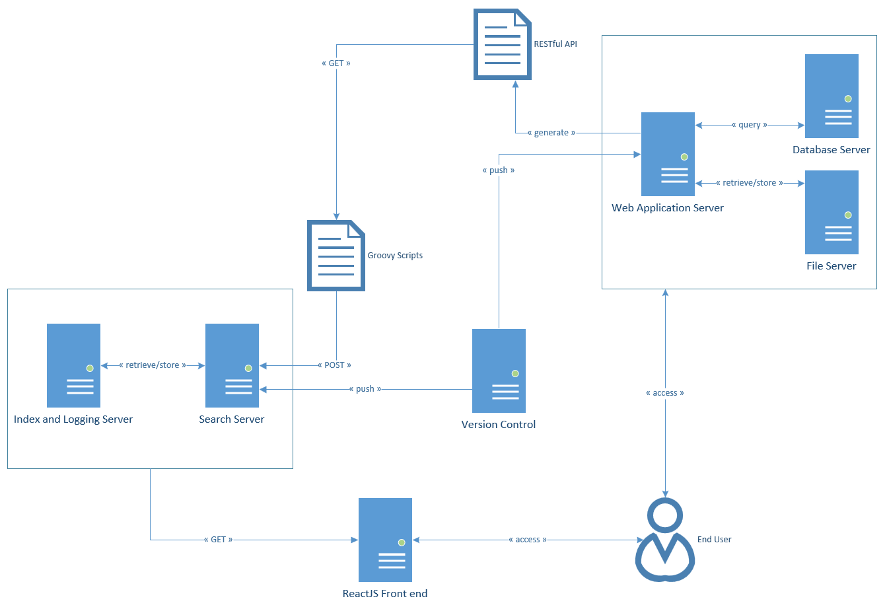

Documentation can also be referenced in the Github repository
Official Documentatioon for some of the components mentioned in this documentation:
This entire project will contain small components that can be used for testing as minimal viable products. It is not required to have everything running, the main files that this project will use will be in the solr-configuration-files/:
There are also other configuration files to be considered if the instance will be deployed as either in a Kubernetes pod or as Docker containers, which can be found in the following:
The idea for this project was converting the Solr instance into service which will then be managed in Kubernetes. This service will require access to files and REST API in order to index the content on the site as well as being able to search the contents within various documents (including .pdf, .doc, .docx, etc). The way it works is that the REST API will provide a more accurate content data without scraping an entire web page with all the excess JavaScript and HTML code and pushed to the Solr instance for indexing. This will help with results manipulation when it is displayed on the front end (can be tested using the ReactJS application) as well as retrieving data that would only be available to the user (if access roles are implemented). Please see the groovy scripts, the elgg plugin solr_api for a more in depth technical information, and the diagram below for the workflow.
In the diagram above, we have the web application server that is connected to both the database server and FTP file server. The web application server will contain the REST API that will be used to retrieve data from either the database and links to files from the FTP server. The APIs (implemented as an Elgg plugin) require authentication since these information could be set to specific access roles by the content owner.
The Groovy scripts that will retrieve the data from the API, manipulate and clean (removing JavaScript and HTML, organizing the data to conform to the Solr schema configuration, etc) the information before it is push and commited to the Solr instance for indexing. The said scripts will be managed on the dedicated search server, which will be run on a daily basis as a crontab on Linux, or scheduler on Windows.
@TODO
- Groovy scripts allow parameter to specify Solr and REST API URL or IP Address
- Create snippet of commands to start up Kubernetes, Docker, or manual set up
- Develop more in depth workflow diagram (data flow)
This project was developed on Ubuntu Server 16 LTS, on VMWare Workstation 14 Player and tested on the Azure Cloud (excluding Kubernetes, which are managed differently on the cloud than on the local instance). There may be additional steps that are required to run it on a Windows environment.
Please note that if you need to update Apache Tika (for file scraping), you will be required to install Apache Maven to get the .jar files to replace the old instance that comes with Apache Solr.
Since there is a Dockerfile included within this repository, all the dependencies will be automatically included into the project. The dockerfile includes the following dependencies (the versions may change over time). This instance of Solr within a Docker and orchestrated by local instance of Kubernetes was developed on Ubuntu Server 16 LTS. This docker repository can be found at https://hub.docker.com/r/pandurx/solr-service/. The table as followed contains the minimum requirement
| Virtual Machine Specifications | Dependencies | |||||||||||||||||||||||||||
|---|---|---|---|---|---|---|---|---|---|---|---|---|---|---|---|---|---|---|---|---|---|---|---|---|---|---|---|---|
|
|
|||||||||||||||||||||||||||
| Updated on June 1 2018 | ||||||||||||||||||||||||||||
@TODO
- Implementation on new versions of Ubuntu Server (or other distribution)
- Implementation on Windows environment
Lets get started with some information for each of the directories included in this repository:
The dockerfile is in the docker-configuration-files directory, run the following commands to build and run:
# install docker ce**
$ curl -fsSL https://download.docker.com/linux/ubuntu/gpg | sudo apt-key add -
$ sudo add-apt-repository "deb [arch=amd-] https://download.docker.com/linux/ubuntu $(lsb_release -cs) stable"
$ sudo apt-get update
$ apt-cache policy docker-ce
$ sudo apt-get install -y docker-ce
$ sudo systemctl status docker
# run docker container
$ docker build -t search-portal
$ run --name solr-portal -d -f solr-portal
# display status of the container(s)
$ docker ps
This section is still being written, please note that this portion of the project was tested and implemented on a local instance of Kubernetes.
# install kubernetes
$ apt-get install
# run kubernetes pod deployment
$ kubectl portal-service --image=portal-service --port=-- --host=XXXX
# remove and clean up the service
$ kubectl kill portal-service-###
$ kubectl delete deployment portal-service
@TODO
- Implementation on new versions of Ubuntu Server (or other distribution)
- Implementation on Windows environment
If you are currently logged in as root user on the linux machine, you might run into an error stating that you cannot start the solr service as that user. Typically, it is much safer to run the solr server with a different user account that has only access necessary directories and the access rights to run specific services that is required for the search functionality.
If the search engine is currently in development or testing, the service can be started with a root user with an additional parameter passed in. Otherwise, omit the -f flag if the service will be started with a non-root user.
Please note that the script to run the engine is in the ``/opt/solr/bin`` directory for the Ubuntu Server environment.
# install nodejs
################
$ curl -sL https://deb.nodesource.com/setup_8.x -o nodesource_setup.sh
$ sudo bash nodesource_setup.sh
$ apt-get install nodejs
$ npm -v
# compile the code
$ npm install -g create-react-app
$ create-react-app search-portal
$ cd search-portal/
# start the application
$ npm start
# to import libraries, they must be in the npm repository
$ npm install --save react-fontawesome
# installing apache groovy
##########################
$ curl -s get.sdkman.io | bash
$ source "$HOME/.sdkman/bin/sdkman-init.sh"
$ sdk install groovy
# running groovy scripts
$ groovy script-name-here.groovy
# installing solr on Ubuntu Server
##################################
# in your home directory, download the solr package from their official site and unzip
$ wget http://httpd-mirror.sergal.org/apache/lucene/solr/7.3.0/solr-7.3.0.tgz --no-proxy -q
$ tar -xf solr-7.3.0.tgz
$ mv solr-7.3.0 solr && mv solr /opt/
# move the configuration file (that is included in this repository) to the solr engine
$ mv elgg-core /opt/solr/server/solr/
# on an instance of linux, the solr app files are all located within /opt/solr/
$ cd /opt/solr/bin
# if currently logged into Ubuntu as a non-root user, omit the -f flag
$ ./solr start -f
$ ./solr stop
Waiting up to 180 seconds to see Solr running on port 8983 [-]
Started Solr server on port 8983 (pid=22624). Happy searching!